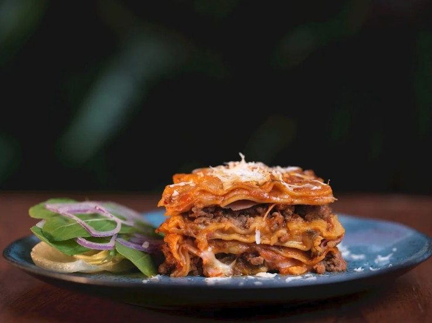

Lasagna

Lasagna Picture by Augusto Carneiro Junior and avaiable on Pexels free for use.
Description
A delicious lasagna Bolognese is the perfect dish to bring the whole family together around the dinner table on Sunday.
Made with ground beef and tomato sauce, Bolognese sauce is perfect with any pasta, but it's even tastier in lasagna. Besides how to make it, this recipe will also teach you how to assemble your lasagna.
Ingredients
- 3 tablespoons butter;
- 3 tablespoons all-purpose flour;
- 2 cups milk;
- 2 cups heavy cream;
- 1 tablespoon oil;
- 2 cloves garlic, crushed;
- 1 onion, chopped;
- 300g ground beef;
- 3 cups tomato pulp, blended in a blender;
- 3/4 cup hot water;
- Salt to taste;
- 200g sliced ham;
- 200g sliced mozzarella cheese;
- 250g lasagna noodles;
Steps
Preparing the Lasagna is easy, just follow the steps!
White Sauce
- Melt the butter and brown the flour over low heat, stirring constantly. Gradually add the milk;
- Cook until you obtain a thick sauce. Add the cream and season with salt;
- Set aside;
Bolognese Sauce
- Heat the oil and sauté the garlic and onion until golden brown;
- Add the ground beef and cook until browned. Once the meat is cooked, add the tomato pulp and water, mix in the salt, and cook until boiling;
- Set aside;
Assembly
- In a large baking dish, place a layer of Bolognese sauce, lasagna noodles, ham, mozzarella, and white sauce;
- Add more lasagna noodles, ham, and Bolognese sauce, and finish with mozzarella;
- If desired, sprinkle with grated Parmesan cheese;
- Bake in the oven to gratin for 20 minutes;
Enjoy!